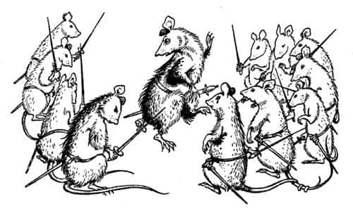
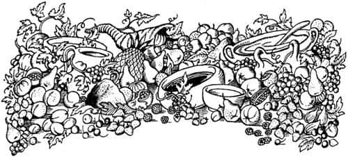
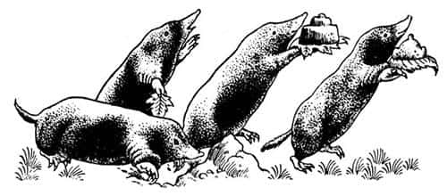
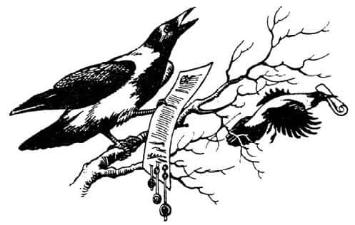
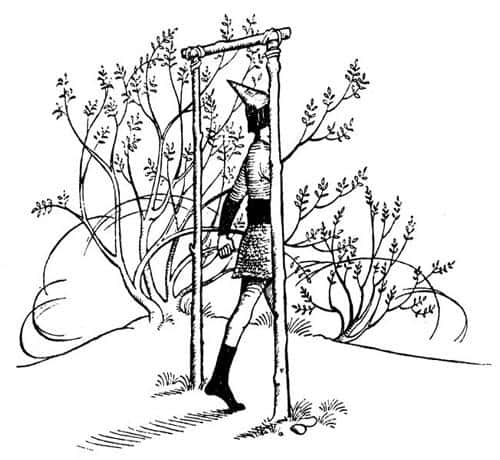
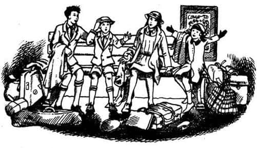

Aslan Havada Bir Kapı Açıyor
Aslan’ın görünmesiyle Telmarlı askerler donup kaldı, dizlerinin bağı çözüldü, ayakları birbirine dolaştı ve pek çoğu yüzüstü yere kapaklandı. Aslan’a inanmıyorlardı ve bu da korkularını artırıyordu. Onun dostça geldiğini bilen kızıl cücelerin bile ağızları açık kalmıştı. Nikabrik’in grubundan olan kara cücelerden bazıları çaktırmadan uzaklaşmaya başlamışlardı. Ama bütün konuşan hayvanlar Aslan’ın etrafına koşmuşlardı. Hırıltılar, homurtular, ciyaklamalar, neşeli kişnemelerle kuyruklarını sallayarak ona hoş görünmeye çalışıyor, sürünüyor, burunlarıyla saygılı bir şekilde ona dokunuyor, karnının altında ve ayaklarının arasında ileri geri gidip geliyorlardı. Eğer küçük bir kedinin, güvendiği ve tanıdığı büyük bir köpekle oynadığını gördünüzse, onların nasıl da seyredilesi bir manzara oluşturduğunu kafanızda canlandırabilirsiniz. Sonra Peter, arkasına Caspian’ı da aldı ve kalabalığın arasında yol açarak ilerledi. “Bu, Caspian, Efendim” dedi.
Caspian eğilerek Aslan’ın pençesini öptü.
“Hoş geldin Prens” dedi Aslan. “Narnia kralı olmak için kendini yeterli görüyor musun?”
“Sa – sanmıyorum, Sör” dedi Caspian. “Ben henüz bir çocuğum.”
“Güzel” dedi Aslan. “Kendini yeterli hissetseydin, bu, hazır olmadığının kanıtı olacaktı. İşte bunun için bizim ve Yüce Kral’ın emrinde, Narnia Kralı, Cair Paravel Lordu ve Issız Adalar’ın imparatoru olacaksın. Soyun devam ettiği sürece krallık sizde olacak. Ve taç giyme törenin – hey bu da ne böyle?”
O anda tuhaf ve küçük bir topluluk yaklaşmaktaydı; on bir fareden altısı, dallardan yapılmış bir tahtırevanın üzerinde bir şey taşıyorlardı. Ancak tahtırevan büyük boy bir kitap kadardı. Hiç kimse bundan daha kederli fareler görmemiştir. Hepsi çamura – ve bazıları da kana – bulanmıştı, kulakları düşmüş, bıyıkları sarkmıştı, kuyrukları otlarda sürünüyordu. Liderleri incecik kavalıyla hüzünlü bir melodi çalmaktaydı. Tahtırevanda taşınan Bastıbacak’tan geriye ıslak bir tüy yığınından başka bir şey kalmamıştı. Hâlâ nefes alıyordu, ama canı gitgide tükeniyordu; sayısız ağır yarası vardı, pençelerinden biri ezilmişti ve kuyruğu kopmuştu, bir zamanlar uzun bir kuyruk çıkan poposunda şimdi bir sargı vardı.
“Evet, Lucy” dedi Aslan.
Lucy hemen elmas şişesini çıkardı. Bastıbacak’ın her yarasına sadece bir damla yetecekti, ama o kadar çok yarası vardı ki Lucy işini bitirene kadar uzun ve endişeli bir sessizlik oldu. Farelerin üstadı tahtırevandan sıçradı, bir eliyle kılıcının kabzasını tuttu, diğer eliyle de bıyıklarını burmaya başladı. Eğilerek selam verdi.
“Yaşasın Aslan!” diye duyuldu ince sesi. “Şeref duyarım ki—” Ancak sonra aniden durdu.
İşin gerçeği, kuyruğu yerine gelmemişti; ya Lucy unutmuştu ya da iksir, yaraları iyileştirebiliyor, ama organları yenileyemiyordu. Bastıbacak eğilirken eksikliğin farkına varmıştı; belki de kuyruğu nedeniyle dengesi bozulmuştu. Sağ omzunun üzerinden baktı. Kuyruğunu göremeyince, omuzlarını ve dolayısıyla vücudunu döndürmek zorunda kalana kadar boynunu geriye uzatmaya çabaladı. Ne var ki bu arada vücudu da döndüğü için göremiyordu. Sonra omzunun üzerinden bakmak için tekrar boynunu uzattı ve aynı sonucu aldı. Kendi çevresinde tam üç kez döndükten sonra korkunç gerçeği anladı.

“Şaştım kaldım” dedi Bastıbacak, Aslan’a. “Dayanılamayacak kadar kötü durumdayım. Böyle münasebetsiz bir şekilde karşınıza çıktığım için affınızı rica edeceğim.”
“Bu sana çok yakışmış, Küçük Adam” dedi Aslan.
“Yakışsa bile” diye cevapladı Bastıbacak, “eğer bir şeyler yapılabilirse – belki Majesteleri?” bunu söylerken Lucy’nin önünde bir reverans yaptı.
“İyi de bir kuyruktan ne çıkar?” diye sordu Aslan.
“Efendim” dedi Fare, “Kuyruğum olmadan, yiyebilir, uyuyabilir ve kralım için ölebilirim. Fakat kuyruk bir farenin şan ve şerefidir.”
“Bazen, şerefini çok mu fazla düşünüyorsun acaba diye merak ediyorum dostum” dedi Aslan.
“Yücelerin yücesi Kralım” dedi Bastıbacak, “biz farelere çok küçük bir boy ihsan edildiğini hatırlatmama izin verin. Ve biz eğer gururumuzu dikkatle korumazsak (kişilerin değerlerini boylarıyla ölçen) bazıları pek de uygun olmayan şeyler anlatabilir. İşte bunun için bu kılıcı kalbinin yakınında hissetmek istemeyen kişinin benim önümde tuzaklar, peynirler ya da mumlar hakkında konuşamayacağının bilinmesine özen gösteririm. Hayır efendim, Narnia’nın en uzun boylusu bile yapamaz bunu.” Bunu söylerken çok sert bir tavırla yukarıya, Kazmakürek’e bakmıştı, ancak olayları her zaman herkesin bir adım gerisinden takip eden dev, ayaklarının dibinde neler konuşulduğunu henüz fark etmemiş ve bu yüzden farenin söylemek istediği şeyi anlayamamıştı.
“Yandaşlarının neden kılıç çektiklerini sorabilir miyim?” dedi Aslan.
“Yüce Majesteleri isterlerse” dedi ismi Dürbüngöz olan ikinci bir fare, “eğer liderimiz bundan sonra kuyruksuz dolaşacaksa biz de kuyruklarımızı kesmeye hazırız. Yüce fareden esirgenen bir şerefi taşımanın ayıbını sırtlayamayız.”
“Ah!” diye kükredi Aslan. “Beni ikna ettiniz. Kalpleriniz çok geniş sizlerin. Bastıbacak, gururun nedeniyle değil ama senin ve arkadaşlarının birbirlerine duyduğu sevgiden ve dahası, uzun zaman önce Taş Masa üzerinde beni bağlayan ipleri kemirmekle bana gösterdiğiniz nezaket nedeniyle (bunu çoktan unuttunuz ama siz o andan itibaren konuşan fareler olarak yaşamaya başladınız) kuyruğuna kavuşacaksın.”
Aslan daha konuşmasını bitirmeden, yeni kuyruk yerindeydi. Sonra Aslan’ın emriyle Peter, Caspian’ı Aslan Birlik Şövalyeliği’ne atadı. Caspian şövalye olur olmaz, Mantarsever, Yaygaracı ve Bastıbacak’ı şövalye, Doktor Cornelius’u da lord şansölye yaptı ve şişman ayının geleneksel görevini almasını, yani düello görevlisi olmasını onayladı. Büyük bir alkış koptu.
Bundan sonra Telmarlı askerler sıkı önlemler altında, dövülmeden, aşağılanmadan sığlıkların öte yanına götürüldü. Beruna şehrinde kilit altına alınıp biftek ve bira ile beslendiler. Askerler nehri yürüyerek geçmeye zorlanınca, büyük bir şamata koptu. Çünkü akarsudan da, en az ormandan ve hayvanlardan nefret ettikleri kadar nefret ediyorlardı. Neyse ki sonunda bu çile sona ermiş ve o uzun günün en güzel bölümü başlamıştı.
Yemekten sonra üstüne bir ağırlık çöken Lucy, gelip Aslan’ın yanına oturdu; ağaçların ne yaptığını merak etmişti. Önce onların dans ettiğini sanmıştı; iki çember halinde yavaş yavaş dönüyorlardı, biri soldan sağa, diğeri sağdan sola. Sonra iki çemberin merkezine sürekli bir şeyler fırlatmakta olduklarını fark etti. Bazen saçlarının uzun tellerini kesiyormuş, bazen de parmaklarından küçük parçalar kırıyormuş gibi görünüyorlardı; eğer öyleyse, bir sürü parmakları olmalıydı ve yaptıkları onların canını yakmıyordu. Fakat yere attıkları şeyler, yere düştüğünde çalılara ya da kuru çomaklara dönüşüyordu. Sonra üç ya da dört kızıl cüce, közlü mangallarıyla ileriye çıktı ve yığını ateşe verdi. Ateş önce çıtırdadı, sonra alevlendi ve sonra da, bir yaz gecesi orman ateşinin olması gerektiği gibi, gürüldemeye başladı. Herkes büyük bir çember yaparak ateşin etrafına oturdu.
Sonra Baküs, Silenus ve Maenad’lar, ağaçların dansından çok daha çılgınca bir dansa başladılar. Güzellik ve eğlence adına değil (bunlar da amaçlanmış olabilir belki ama) büyülü bir bereket dansıydı onlarınki. Ellerinin dokunduğu, ayaklarının bastığı yerlerde ziyafet sofraları ortaya çıkıyordu – koruyu nefis bir kokuyla dolduran tepsiler dolusu kızarmış et, buğdaylı ve yulaflı kekler, bal ve çok renkli şekerler, en koyusundan kaymaklar, şeftaliler, nektarinler, narlar, armutlar, çilekler, ahududular, tepeleme meyveler – sarmaşıklardan çelenklerle süslenmiş büyük ağaç kaplar, taslar ve tepsilerde şaraplar getirildi: Karadut şurubu gibi koyu olanlar, sulandırılmış kırmızı jöleye benzeyenler, sarı şaraplar, yeşil şaraplar, sarımsı yeşil ve yeşilimsi sarı şaraplar.

Fakat ağaç halkı için değişik yemekler hazırlanıyordu. Lucy, Kuyukazan ve diğer köstebeklerin, alanın çeşitli yerlerinde (Baküs’ün işaret ettiği yerlerde) toprakla uğraştıklarını görüp ağaçların toprak yiyeceklerini anlayınca ürperdi. Getirilen toprakları görünce farklı şeyler düşündü. Çikolata kıvamında koyu kahverengi bir toprakla başlamışlardı yemeklerine; toprak çikolataya öyle çok benziyordu ki Edmund bir parça alıp tadına baktı, ama hiç de lezzetli bulmadı. Bu koyu toprak açlıklarını biraz kırınca, ağaçlar, günbatımında gördüğünüz türden bir pembenin hâkim olduğu bir toprağı yemeye başladılar. Daha hafif ve daha tatlı olduğunu söylüyorlardı. Sıra peynire gelince, tebeşire benzeyen bir toprak yediler ve gümüş kumlar serpilmiş en iyisinden çakılları, hafif şekerlemeler olarak yiyerek devam ettiler. Çok az şarap içmişlerdi, ama bu çobanpüsküllerini çok konuşkan yapmıştı: Susuzluklarını çoğunlukla orman çiçekleri ve tüy gibi bulutların serin tadıyla tatlanmış çiy ve yağmur karışımı yudumlarla gidermişlerdi.

Böylece Aslan, güneş batıp da yıldızlar çıktıktan sonraki geç saatlere kadar Narnialılara ziyafet çekti. Şimdi daha sessiz ama daha parlak olan ateş, karanlık ormanda bir fener gibi parlıyordu ve korkmuş Telmarlılar onu uzaktan görüp, tüm bunların ne anlama geldiğini merak ediyorlardı. Ziyafetin en iyi yanı, bitince kimsenin eve gitmek zorunda olmamasıydı. Ama konuşmalar fısıltılara dönüştükçe, herkes birbirine baş sallamaya, yakın dostlarını yanına almaya başladı. Ayaklarını ateşe dönüp uykuya teslim oluyorlardı. Sonunda tüm çember sessizliğe gömüldü. Beruna Sığlıkları’ndaki suların taşlar üzerinde çıkardığı şıkırtılar duyulabiliyordu. Aslan ve Ay, bütün gece sevinç içinde, göz kırpmadan birbirlerine baktılar.
Ertesi gün, Beruna’daki esirler de dahil olmak üzere, tüm Telmarlılara hitap eden bir ilan için ülkenin dört bir yanına (genellikle sincaplar ve kuşlardan oluşan) haberciler gönderildi. Habercilere Caspian’ın kral olduğu ve bundan böyle Narnia’nın insanlara olduğu kadar konuşan hayvanlara, cücelere, orman perilerine ve Faunlara da ait olduğu söylenmişti. Yeni yasalara uymak kaydıyla, kalmak isteyen herkes kalabilirdi, durumdan hoşnut olmayanlar için Aslan başka bir yer sağlayacaktı. Ülkeden ayrılmak isteyen herkes beşinci gün öğleye kadar Beruna Sığlıkları’ndaki Aslan’a ve krallara başvurmak zorundaydı. Bunun Telmarlıların kafasını nasıl karıştırdığını tahmin edebilirsiniz. Çoğunluğunu gençlerin oluşturduğu bir kısım Telmarlı, tıpkı Caspian gibi, eski günlere ait hikâyeler duymuşlardı ve kahramanların geri geldiğine çok memnundular. Şimdiden yaratıklarla dost olmaya başlamışlardı. Çoğunluk Narnia’da kalmaya karar verdi. Ama yaşlıların çoğu, özellikle Miraz’ın hükümdarlığı altındaki önemli kişilerin yüzleri asıktı ve yönetimde olamayacakları bir ülkede yaşamayı arzulamıyorlardı. “Burada bir sürü kör olası gösteri hayvanıyla yaşamak mı! Sanmıyorum” dediler. “Hayaletler de var” diye ekledi bazıları ürpertiyle. “O orman perileri gerçekte hayalettir. Bizi aldatamazlar.” Aynı zamanda şüpheciydiler. “Onlara güvenmiyoruz” dediler, “o korkunç Aslan’a ve diğerlerine. Pençelerini bize geçirmesi uzun sürmeyecektir, görürsünüz—” Ama yeni bir yer bulma teklifinden de aynı şekilde şüpheliydiler. “Bizi inine götürüp birer birer yiyecek herhalde” diye mırıldandılar. Konuştukça yüzleri daha çok asıldı ve daha çok kuşkulandılar. Fakat söylenilen günde yarıdan fazlası gelmişti.

Aslan, alanın bir ucunda, aralarında yaklaşık bir metre olan, bir insanın boyundan uzun iki kazık çaktırmıştı. Daha hafif üçüncü bir ağaç parçası tepelerinden bunlara bağlanıp ikisini birleştirmişti ve böylece bütün yapı, hiçbir yere açılmayan bir kapı gibi görünüyordu. Kapının önünde, sağda Peter, solda Caspian’la Aslan durmaktaydı. Etraflarında bir grup halinde Susan ve Lucy, Yaygaracı ve Mantarsever, Lord Cornelius, Fırtına, Bastıbacak ve diğerleri dikilmekteydi. Çocuklar ve cüceler eskiden Miraz’ın, fakat şimdi Caspian’ın kalesi olan sarayın dolaplarından iyi faydalanmasını bilmişti – ipek ve altın kumaşlar, kollarındaki yırtmaçların arasından görünen kar beyaz ketenler, gümüş zincir zırhlar ve mücevher kakmalı kılıç kabzaları, yaldızlı miğferler ve tüylü şapkalarıyla ışıl ışıl görünüyorlardı. Hayvanlar bile boyunlarına pahalı zincirler takmıştı. Yine de kimse hayvanlara ya da çocuklara bakmıyordu. Aslan’ın altından yapılmış gibi görünen yelesi her şeyden çok parlıyordu. Eski Narnialıların geri kalanı alanın her iki yanında ayakta duruyordu. Öbür uçta Telmarlılar dikiliyordu. Gün ışığı pırıl pırıldı ve flamalar hafif rüzgârda dalgalanıyordu.
“Telmar halkı” dedi Aslan, “yeni bir ülke arayanlar, sözlerimi dinleyin. Hepinizi, benim bildiğim ama sizin bilmediğiniz kendi ülkenize göndereceğim.”
“Biz Telmar’ı hatırlamıyoruz. Nerede olduğunu bilmiyoruz. Nasıl bir yer olduğunu bilmiyoruz” diye yakındı Telmarlılar.
“Siz Narnia’ya Telmar’dan geldiniz” dedi Aslan. “Ama Telmar’a da başka bir yerden gelmiştiniz. Siz bu dünyaya ait değilsiniz. Siz buraya, birkaç kuşak önce, Yüce Kral Peter’in de ait olduğu dünyadan geldiniz.”
Telmarlıların yarısı sızlanmaya başladı, “Gördünüz mü? Söylemiştim size. Hepimizi öldürecek, dünyanın dışına gönderecek” ve diğer yarısı da sandıklarını fırlatıp birbirlerinin sırtına vurmaya ve fısıldaşmaya başladılar, “Gördünüz mü? Bütün bu zalim ve acayip yaratıklarıyla, bu yere ait olmadığımızı tahmin etmeliydik. Göreceksiniz, soylu bir kandan geliyoruz.” Hatta Caspian, Cornelius ve çocuklar bile şaşkınlıkla Aslan’a baktılar.
“Sakin olun” dedi Aslan, hırlamaya yakın alçak bir sesle. Yer sallanıyor gibi oldu ve korudaki her canlı, taş gibi, öylece kalakaldı.
“Sen, Sör Caspian” dedi Aslan, “eski krallar gibi, âdemoğlu olmasan ve âdemoğullarının dünyasından gelmesen, Narnia’ya gerçek bir Kral olamazdın, bunu biliyor olmalısın. Bir âdemoğlusun. Yıllar önce o dünyada, Güney Denizleri denilen uzak denizlerde, bir gemi dolusu korsan fırtına yüzünden bir adaya çıkmışlardı. Korsanlar nasıl yaparsa öyle davrandılar: Yerlileri öldürüp yerli kadınları karıları olarak aldılar, palmiyelerden şarap yapıp içtiler ve sarhoş oldular, ayılıp kavga ettiler ve bazen birbirlerini öldürdüler. O kavgalardan birinde altısı, diğerleri tarafından kovalandı ve kadınlarıyla birlikte adanın merkezindeki bir dağa kaçtılar. Saklanmak için mağara sandıkları bir yere girdiler. Ama orası, o dünyanın büyülü yerlerinden biriydi, o dünyayla burası arasındaki kapılardan biriydi. Eski zamanlarda dünyalar arasında birçok kapı vardı, fakat gittikçe azaldılar. O bunların sonuncularından biriydi: Sonuncusu demiyorum. Böylece düştüler ya da yükseldiler ya da tırmandılar ve kendilerini bu dünyada, o zamanlar kimsenin yaşamadığı Telmar topraklarında buldular. O zamanlar Telmar’da neden kimsenin yaşamadığı uzun hikâye, bunu şimdi anlatmayacağım. Onların soyundan gelenler Telmar’da yaşayıp kaba ve kibirli insanlar oldular. Kuşaklar sonra Telmar’da bir kıtlık yaşandı, onlar da, o zamanlar kargaşa içinde olan Narnia’yı fethettiler (bu da uzun bir hikâyedir) ve burada hüküm sürmeye başladılar. Tüm bunları iyice anladın mı, Kral Caspian?”
“Evet, Sör” dedi Caspian. “Daha şerefli bir soydan gelmeyi arzulardım.”
“Sen Âdem ve Havva’dan geliyorsun” dedi Aslan. “Bu, en fakir dilencinin bile başını dik tutmasını sağlayacak bir şeref, aynı zamanda dünyadaki en büyük imparatorun bile omuzlarını düşürecek bir ayıptır. Hoşnut olmalısın.”
Caspian bir reverans yaptı.
“Şimdi” dedi Aslan, “Telmarlı erkekler ve kadınlar, atalarınızın dünyasındaki o adaya geri dönecek misiniz? Fena yer değil. Onu keşfeden korsanların soyu tükendi ve adada yaşayan kimse yok. Tatlı su kuyuları, verimli toprakları, ev yapmak için ağaçları ve gölcüklerinde balıkları var. Kapı açık; ama sizi uyarmalıyım, bir kere geçtiniz mi, bir daha açılmamak üzere arkanızdan kapanacak. Dünyalar arasında o kapıdan bir daha geçiş olmayacak.”
Bir an sessizlik oldu. Sonra Telmar askerleri arasından iriyarı ve nazik görünen bir adam ileri çıktı ve dedi ki:
“Pekâlâ, ben teklifi kabul ediyorum.”
“İyi bir seçim” dedi Aslan. “İlk sen konuştuğun için büyü senden yana. O dünyada geleceğin iyi olacak. İleriye çık.”
Şimdi rengi biraz uçmuş olan adam ileriye çıktı. Aslan ve yardımcıları, kazıkların oluşturduğu boş kapıya serbestçe yaklaşabilmesi için kenara çekildiler.
“Geç içinden, oğlum” dedi Aslan, kendi burnuyla adamın burnuna dokunarak. Aslan’ın soluğu değer değmez, adamın gözlerinde, sanki bir şey hatırlamaya çalışıyormuş gibi yeni bir bakış – ürkek ama mutsuz olmayan bir bakış – görüldü. Sonra omuzlarını kaldırdı ve kapıya yürüdü.

Kimse gözünü alamıyordu adamdan. Üç odun parçasını ve onların arasından ağaçları, otları ve Narnia’nın gökyüzünü görebiliyorlardı. Adamı kapının direkleri arasında gördüler. Bir saniye sonra tamamıyla ortadan kayboldu. Alanın öbür ucundan Telmarlılar bir feryat koyuverdiler. “Of! Ne oldu ona? Bizi öldürmek mi istiyorsunuz? Oraya gitmeyeceğiz.” Sonra akıllı Telmarlılardan biri dedi ki:
“Biz o çomakların arkasında başka bir dünya görmüyoruz. Ona inanmamızı istiyorsanız neden sizlerden biri de gitmiyor? Kendi arkadaşlarının hepsi kapının uzağında duruyor.”
O an Bastıbacak ileri çıktı ve bir reverans yaptı. “Eğer benim gitmemin bir yardımı olacaksa, Aslan” dedi, “bir sözün üzerine on bir fareyi aynı anda şu kapıdan geçiririm.”
“Hayır, küçük” dedi Aslan, kadife pençesiyle Bastıbacak’ın başına hafifçe dokunarak. “O dünyada sana korkunç şeyler yaparlar. Seni panayırlarda gösterirler. Başkaları öncülük etmeli.”
“Haydi” dedi Peter, Edmund ve Lucy’ye. “Vakit geldi.”
“Ne demek istiyorsun?” dedi Edmund.
“Bu yoldan” dedi her şeyi biliyormuş gibi görünen Susan. “Ormanın içine. Değiştirmemiz lazım.”
“Neyi değiştireceğiz ki?” diye sordu Lucy.
“Giysilerimizi tabii ki” dedi Susan. “Bunların içinde, İngiltere’de bir istasyonda aptallar gibi görünürüz.”
“Fakat diğer elbiselerimiz Caspian’ın kalesinde” dedi Edmund.
“Hayır, değil” dedi Peter, onları sık ağaçlıklara doğru yönlendirerek. “Her şey burada. Bu sabah bohçalanıp buraya getirildiler. Her şey ayarlandı.”
“Aslan’ın bu sabah sen ve Susan’la konuştuğu bu muydu?” diye sordu Lucy.
“Evet, bu ve benzer şeyler” dedi Peter, ciddi bir ifadeyle. “Her şeyi size anlatamam. Aslan’ın bana ve Su’ya söylemek istediği şeyler vardı, çünkü biz Narnia’ya geri dönmeyeceğiz.”
“Hiç mi?” diye bağırdı Edmund ve Lucy dehşetle.
“Ah, siz ikiniz geleceksiniz” diye cevapladı Peter. “En azından, Aslan böyle diyor, sizin bir gün geri döneceğinizi kastetti, eminim. Fakat ben ve Su dönmeyeceğiz. Bizim yaşlandığımızı söylüyor.”
“Ah, Peter” dedi Lucy. “Ne kötü şansın var. Dayanabilecek misin?”
“Sanırım dayanabilirim” dedi Peter. “Hiç de düşündüğüm gibi değil. Son yolculuğuna çıktığın zaman anlarsın ne demek istediğimi. Şimdi acele etmemiz lazım, işte eşyalarımız.”
Saray elbiselerini çıkarıp (artık pek temiz değillerdi) okul elbiseleriyle o büyük toplantıya geri dönmek garip geldi onlara, bundan hiç hoşnut değillerdi. Kötü Telmarlılardan bir ya da ikisi kahkahalar atarak alay ettiler. Fakat diğer yaratıkların hepsi, Yüce Kral Peter, Kraliçe Susan, Kral Edmund ve Kraliçe Lucy şerefine alkışlarla ayağa kalktılar. Bütün arkadaşlarına sevgi ve gözyaşlarıyla veda ettiler – hayvan öpücükleri, şişman ayılarla kucaklaşmalar, Yaygaracı’yla el sıkışmalar ve bıyıkları insanın tüylerini diken diken eden Mantarsever’le son bir kucaklaşma. Caspian, Susan’a borusunu geri vermeyi teklif etti, ama Susan istemediğini söyledi. Sonra çok gösterişli, bir o kadar da üzücü bir şekilde Aslan’a elveda dediler. Peter’in omzunda Susan’ın elleri vardı. Susan’ın omzundaysa Edmund’un elleri. Edmund’un omzundaysa ilk Telmarlının elleri. Böylece sıraya girerek yerlerini aldılar ve uzun bir kuyruk halinde kapıya doğru ilerlediler. Bundan sonra anlatılması çok zor olan bir an geldi, çünkü çocuklar üç şeyi bir arada görüyormuş gibiydiler. Birisi, tüm Telmarlıların kapıdan geçtikleri an kendilerini bulacakları Pasifik adasının mavi ve yeşil parıltılarına bakan bir mağaranın ağzıydı. İkincisi, Narnia’da bir alan, hayvanların ve cücelerin yüzleri, Aslan’ın gözlerinin derinliği ve porsuğun yanaklarındaki beyazlıklardı. Üçüncüsü (çabucak diğer ikisinin yerini almıştı) bir istasyonun gri ve çakıllı yüzeyi ve sanki hiçbir yere gitmemişler gibi hepsinin oturduğu, etrafı valizlerle çevrili banktı; tüm başlarına gelenlerden sonra biraz sıkıcıydı, ama aynı zamanda beklenmedik bir şekilde, o bildikleri demiryolu kokusu, İngiliz semaları ve arkada bıraktıkları yaz dönemi ile kendine has bir güzelliği vardı.

“Eh!” dedi Peter. “İyi zaman geçirdik.”
“Olamaz!” dedi Edmund. “Yeni el fenerimi Narnia’da unuttum.”
C.S. Lewis’in önerdiği okuma sırasıyla Narnia Günlükleri:
Büyücünün Yeğeni
Aslan, Cadı ve Dolap
At ve Çocuk
Prens Caspian
Şafak Yıldızı’nın Yolculuğu
Gümüş Sandalye
Son Savaş